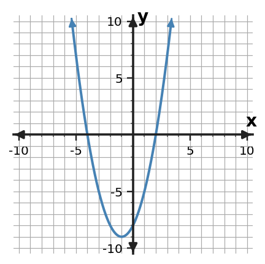

Algebra 1 · Unit 5 · Section 5.4 · Investigation
Zeros Tell the Story
Factored Form and Zeros
Learning Target: Students will connect factors, zeros, intercepts, and graphs of quadratic functions.
Directions
- Work with a partner unless your teacher assigns a different grouping.
- Show the evidence you use, not only the final answer.
- When a representation changes, keep the meaning of the quantities attached to your work.
- Revise an answer if later evidence shows that your first claim was incomplete.
Part 1 · Factors to Zeros
| Factored function | Zeros | x-intercepts |
|---|---|---|
| $y=(x-2)(x+4)$ | ||
| $y=(x+1)(x-5)$ | ||
| $y=2(x-3)^2$ |
Part 2 · Predict the Graph
Use the factored form $y=(x-2)(x+4)$ to predict intercepts. Then compare with the graph.

Part 3 · Role of the Leading Factor
Compare $y=(x-2)(x+4)$ and $y=-2(x-2)(x+4)$. Which key features stay the same, and which change?
Synthesis
Complete the chain: factor $\rightarrow$ zero $\rightarrow$ x-intercept. Explain each arrow.